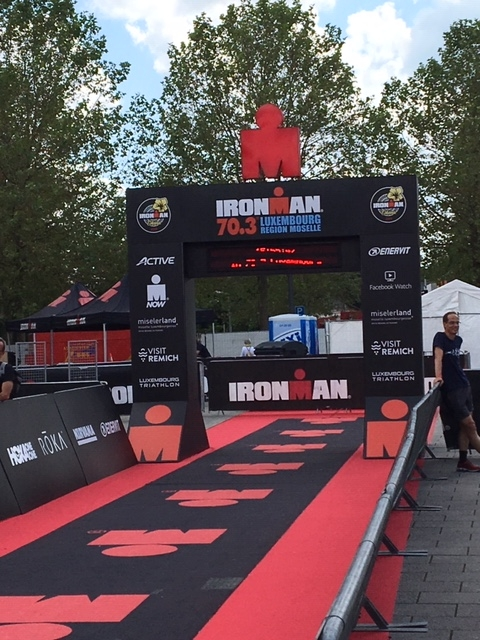
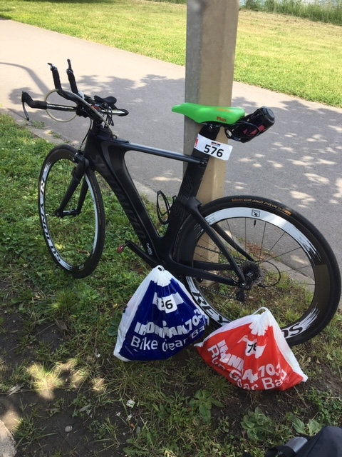
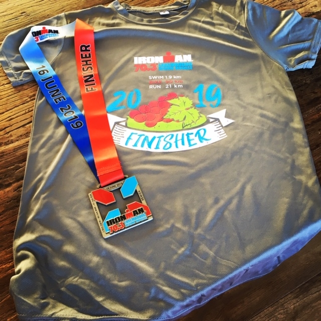

Hier zijn we weer ?
Reeds in September 2018 schreven Maarten en ik ons opnieuw in voor de IM Luxemburg. Mooie wedstrijd, relatief dicht bij huis en we kennen onze weg daar al een beetje (gewoonte dieren)?.
Vrijdag voormiddag (na mijn laatste loopje voor de wedstrijd) vertrokken we richting Luxemburg, met de nodige vertragingen en files arriveerden we enthousiast in Remich waar alles rondom de markt al omgetoverd was tot een Ironman dorp, de registratie, winkeltjes, een hele tent vol met Ironman branded kledij, accessoires, wetsuits,… noem maar op. Eerlijk, ik koop ook wel iedere keer iets als aandenken en dan heb om den duur T-shirts en petten met hopen ?
Na onze registratie, het rondsnuffelen in de winkeltjes en een terrasje was het tijd om naar ons verblijf te trekken, de jeugdherberg in Remerschen (welgekend voor degene die meededen in 2015) zoals steeds een sobere maar van alles voorziene ruime kamer waar we al ons materiaal incl fietsen kwijt konden.
Zaterdagochtend lekker ontbijtje, beetje rusten en dan klaar maken om een uurtje te fietsen met een aantal versnellingen, de benen op spanning zetten ?. Het fietsen voelde goed aan maar toch niet helemaal tevreden. De laatste dagen had ik het soms moeilijk om mijn hartslag omhoog te krijgen nog niet vaak gehad maar ja… Maarten kwam super enthousiast terug van zijn fietsritje “als het morgen even goed gaat, ga ik vlammen!” na een doucheke en middageten een uurtje geslapen. Tijd om de fietsen en de zakken klaar te maken! Nog een geluk dat Maarten bij de zaak was want ik was er met mijn hoofd helemaal niet bij?. Alles ingeladen in de auto en richting Remich waar het superdruk was. In deze editie waren blijkbaar 2500 atleten ingeschreven en dat was duidelijk merkbaar, we parkeerden ons op ong 2km van de wisselzone. Om de 1 of andere reden was ik echt niet bij de zaak, lag het nu aan het feit dat ik totaal geen stress voelde of omdat ik me wat moe voelde, geen idee. Feit is dat het helemaal niet in mijn aard ligt om zo afwezig en nonchalant rond te lopen. Ik zei nog tegen Maarten: hopelijk vind ik mijn fiets morgen terug en herinner ik me mijn startnummer maar gelukkig staat die ook op je polsbandje. Alles goed geplaatst en gehangen. Terug naar het hotel, terrasje ginds, avondeten en vroeg in ons bedje. Nog steeds geen enkel beetje stress…Zondagochtend om 5u30 ging de wekker RACEDAY!!! Na een goede nachtrust (bijna niet te geloven dat ik zo goed sliep) Om 6u konden we ontbijten, we kozen ervoor om onze boterhammen en confituur mee te nemen in een brooddoos en onmiddellijk door te rijden naar Remich kwestie van parkeerplaats dichtbij te hebben. We slaagden in onze opzet en stonden geparkeerd op de dichtst mogelijke parking, doel 1 van de dag was gelukt ?.

Om 7u konden we de wisselzone in om onze bidons op de fiets te zetten, banden op te pompen, laatste controle van de fiets te doen. Nog eens goed kijken hoe en waar we moeten binnenlopen en vertrekken zowel voor het fietsen als lopen want was toch iets veranderd tov vorige keren.
Tegen 8u wetsuit aan en beetje opwarmen in het openlucht zwembad van Remich en daar voelde ik al dat ik een grote fout had gemaakt. Ik had me vorig seizoen een nieuwe wetsuit van Zone 3 aangeschaft maar eigenlijk er nog maar 1 keer een kort zee zwemmeke met gedaan…. Rookie mistake!!! Het zwemmen in de wetsuit voelde vreselijk… Het onderdeel waar ik het meest naar uitkijk en me het best ligt leek een hel te gaan worden. Even schoot het door mijn hoofd om zonder wetsuit te starten maar wat dan met de natte wetsuit?? In de zak steken met droge kleren voor nadien was geen optie, nog eens snel naar de auto ook niet dus dan maar met wetsuit zwemmen en zien wat het geeft. Plots draaide de immense kalme state of mind waar ik de laatste dagen in verkeerde om naar STRESS en ongeloof dat ik die fout gemaakt had… maar daar konden we niks meer aan veranderen.
Naar de zwemstart met een klein hartje, 8u45 start van de profs, om 9u begon de rolling start, ik weet niet juist meer wanneer ik in het water gesprongen ben maar wat ik wel weet is dat het vanaf meter 1 fout ging, brilletje liep vol met water en het gevoel in het water was vreselijk. De eerste 500m ongeveer is het tegenstroom zwemmen om dan te keren aan een grote Ironman boei, ter hoogte van die boei lag een bootje en eerlijk toen ik dat bootje zag had ik heel veel zin om er in te klauteren maar neen, verder doen, we geraken er wel! Volgende 1000m is dan meestroom zwemmen maar dit gaf weinig of geen verandering in mijn gevoel van zwemmen… Toen ik aan de andere zijde de 2e grote Ironman boei rondde wist ik dat het einde van het zwemmen nabij was, nog eens 400 à 500m tegenstroom en we zijn er vanaf! Nog wat gespartel en gevloek en ik klauterde aan wal na een teleurstellende 36’ zwemmen.
De Shiv op dan maar en hopen op goede fietsbenen! De eerste 35km van het fiets parcour zijn zo goed als vlak. Daarbovenop waren de eerste 20 dan nog meewind ook dus dit moest goed meevallen. Tot ik na km 3-4 heel misselijk begon te worden, resultaat: ontbijtje kwam eruit…, ok, gewoon verder doen en wat proberen eten. Na een 10tal min werd het me al duidelijk dat ik geen eten of drinken kon binnenhouden… Toen we na 20km aan het keerpunt kwamen en we tegenwind kregen zakte de moed me in de schoenen en dacht ik er aan om net voor we de klim opdraaien rechtdoor terug naar Remich te rijden en te stoppen. Maar ja eens aan de klim dacht ik we gaan dit toch maar proberen finishen en er stond een auto in de weg. Ik heb die klim reeds een aantal keer gedaan de voorbije jaren en normaal lukt die me goed maar dat was zondag niet het geval, afzien, maagpijn, misselijk kortom het ging een lange dag worden. Doordat ik geen eten of drinken kon binnenhouden voelde ik me ook redelijk slapjes worden. De eerste km’s na het vlakke deel bestaan vooral uit klimmetjes, de ene al wat steiler dan het andere en de ene al langer dan het andere daarna bestaat het parcour vooral uit rolling hills waar we dan weer tegenwind hadden. Onbewust was ik nog steeds met opgeven bezig want steeds was ik op de wegwijzers aan het zoeken naar Remich maar gelukkig was dit nergens te zien. Bij de bevoorrading aan km 60 probeerde ik nog eens een stuk banaan te eten en dit lukte. De km’s erna ben ik dan vooral bezig geweest om toch wat sportdrank en eten binnen te krijgen. De laatste 10-15 km zijn relatief vlak en waren opnieuw meewind. Ik voelde ik me ook opnieuw wat sterker doordat ik toch nog een gelleke, stukje banaan en stukje reep binnen had kunnen houden. Terwijl ik Remich binnenreed met een ratelende achter derailleur (iemand was in de wisselzone tegen mijn achter derailleur geknald en de kooi stond scheef) zag ik Maarten lopen, blij van mijn ventje te zien al zag hij er niet zo happy uit. Hij had na een goeie zwembeurt 29’ en 2u30 fietsen het lopen aangevat, uiteindelijk zou hij na 16km lopen moeten overgaan op wandelen en kleine stukjes lopen door krampen waardoor hij zijn doelstelling om onder de 5u te finishen zag wegsmelten onder de warme zon op het loopparcours. De teleurstelling was groot en begrijpelijk, de voorbije maanden heeft hij veel en hard getraind om er in Luxemburg te staan en als je dan zoiets als krampen voor hebt dan vind je dit niet eerlijk. Op wedstrijd blijkt er steeds iets tussen te komen waardoor het niet loopt zoals je zou willen maar je conditie is meer dan goed en je wil om iets te bereiken is groot! Het tij zal wel keren en dan zal je hoge ogen gooien, ik ben ervan overtuigd!!
Hup wisselzone in en rustig mijn sokken, loopschoenen en petje aan, fietsmateriaal de zak in en lopen maar! Toen ik begon te lopen kon ik het bijna niet geloven, ik voelde me goed! Al snel had ik een mooi tempo maar ik koos er wel voor om iedere bevoorrading (3 per ronde van 7km) te wandelen zodat ik voldoende kon drinken, eten lukte me niet. De eerste 10-11km verliepen super en veel beter dan verwacht! Bij het ingaan van de 3e en laatste ronde begon er serieus verval op te zitten en na km 16 ging het licht volledig uit, dan was het lopen-wandelen-weer een beetje lopen-… dat ik op training de voorbije maanden /jaren niet meer gelopen had dan 12,5km werd duidelijk. Maar toen ik het bordje km20 zag staan heb ik toch nog een mooie laatste km uit de benen geschud!! ?Met de finish in zicht werd ik emotioneel, I made it!!! Na 6u27 afzien liep ik over de finish! Ok, 47’ trager dan in 2015 maar met minstens even veel voldoening! De voorbije maanden/jaren waren niet makkelijk geweest en dan toch nog dit tot een goed einde brengen, trots op mezelf!
Na de finish was ik even kort heel euforisch en happy om dan een paar minuten later compleet leeg al strompelend en met ondersteuning van Maarten naar de athlete zone te geraken. Hij heeft me daar op een bankje gezet terwijl hij zijn materiaal ging oppikken en ik heb daar zo’n 40-45’ voor me zitten uit staren. Het was opnieuw een hele beleving en ervaring maar zo afzien hoeft voor mij niet meer. De volgende zal ik met een betere conditie en alles wat er bij komt aanvatten want dit was niet leuk ?

Bedankt aan al de mensen die me ondersteunen en helpen om deze sport te kunnen beoefenen met mijn beperkte talenten en gaven ?Bedankt aan mijn ventje Maarten die me steeds op de juiste momenten weet te motiveren en steeds de juiste dingen zegt en doet, Bedankt coach Charlene Ottevaere om me te begeleiden naar deze wedstrijd en de volgende. Ik weet dat je vaak aanpassingen hebt moeten doen door ziekte en/of blessures maar niks was je te veel! , Bedankt Kiné Coppé en Osteopaat Arne Lamote om me blessure – en pijnvrij aan de start te krijgen, Bedankt Dr Miek Vyncke voor de goede zorgen het voorbije jaar, ik heb je vaker nodig gehad dan ik zou willen maar je hebt me steeds goed geholpen en bedankt aan de anderen die ik misschien nog vergeet. En ook wel bedankt aan mezelf om niet op te geven en te blijven gaan. #keepgoing
Volgende uitdaging is Vichy maar eerst nog 2 maanden goed trainen en verder werken aan de werkpunten!
See you!!
Groetjes, Sophie